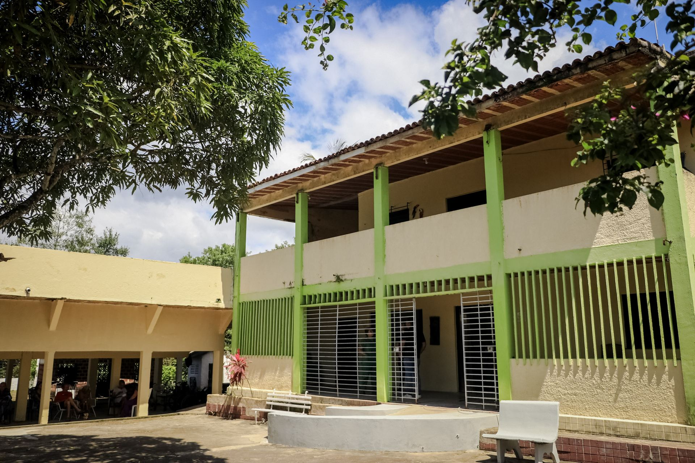

Uma casa com equipe multidisciplinar de plantão.
A Aquarela Pousada Geriátrica fica em Recife e recebe cada morador com uma rotina de cuidado contínuo: assistência técnica 24 horas, acompanhamento médico regular e uma equipe sempre por perto — de cuidadores a técnicos de enfermagem.
Mais do que uma instituição, procuramos manter o ritmo de uma casa: refeições em horários certos, espaços de convivência ao ar livre e atenção aos pequenos detalhes que fazem diferença no dia a dia.
Serviços inclusos
Equipe multidisciplinar
Plantão e assistência técnica 24 horas, todos os dias da semana.
6 refeições diárias
Café da manhã, almoço e jantar, com lanches servidos às 10h, 15h e 20h.
Serviços de hotelaria
Lavanderia inclusa e camareira diária para cuidar da cama e do banho.
Cuidados contínuos
Cuidadores e técnicos de enfermagem disponíveis 24 horas por dia.
Acompanhamento médico
Visita de médico geriatra a cada 30 dias.
Acompanhamento de enfermagem
Presença de enfermeiro semanalmente na pousada.
Suporte nutricional
Nutricionista responsável por adaptar o cardápio às necessidades de cada morador.
Serviços extras (contratados à parte)
Alguns cuidados adicionais podem ser contratados separadamente, de acordo com a necessidade de cada morador.
- Cabeleireiro
- Manicure
- Massoterapia
- Terapia ocupacional
- Fonoaudiologia
- Acompanhamento em consultas — saída com cuidador por R$ 150,00 (transporte a combinar, valor conforme o trajeto)
Um combinado com a família
A família fica responsável pelo fornecimento mensal de medicações, fraldas e produtos de higiene pessoal. Quando necessário, itens de mobilidade — como cadeira de rodas, cadeira de banho ou cama hospitalar — também devem ser providenciados pelos familiares.
Ficou com alguma dúvida sobre os serviços?
Fale com a nossa equipe pelo WhatsApp — respondemos rapidinho.